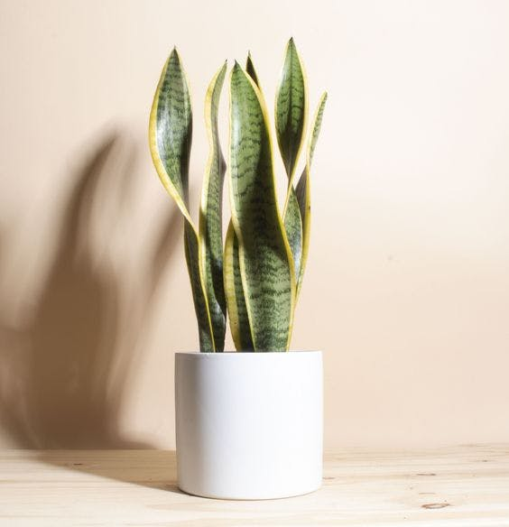

The leopard skin plant is Sansevieria trifasciata, and its common name is the snake plant. It is native to tropical West Africa, and has several species that differ in their sizes and degrees of leaf coloration between green and yellow. For its beautiful foliage, leopard skin is grown in rock gardens with other cacti or alone. It can be planted in pots and basins as indoor sofas to decorate rooms, sitting rooms, receptions, or even work environments, especially since the colors of this plant help add a distinctive color to the place. The tiger skin plant is also known as one of the best air purifying plants.